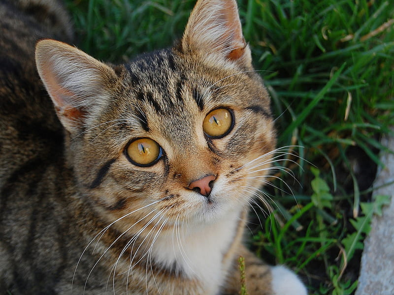

CatLuna 🌙
2 years · Female
Luna is a tabby cat with amber eyes who came to our home on a rainy December day. She is the undisputed queen of the household: demands affection on her own terms and has a special talent for appearing exactly when you're working on something important. Her favorite hobby is watching birds from the window and judging everything I do.